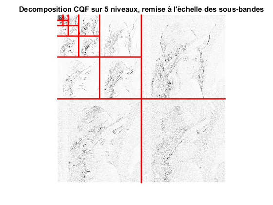
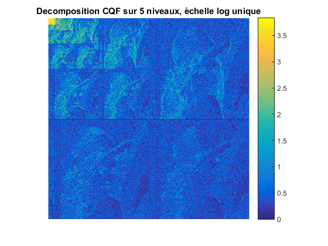
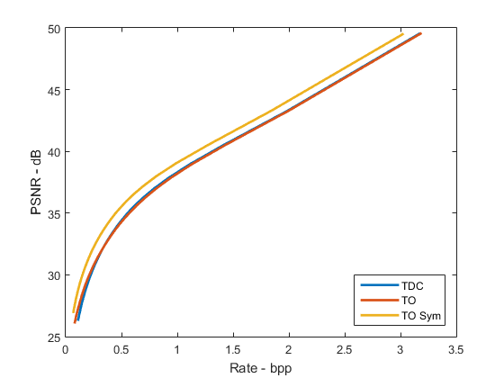
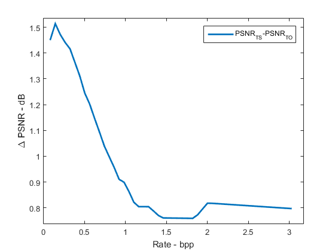

Contents
TP compression d'image
close all; clc; clear
Charger une image
x= double(imread('lena.pgm')); bpp = 8; % bits per pixel dyn = 2^bpp;
Calcul TO symmetrique
nDecLev = 5; imSizeLog = log2(size(x,1)); % Calcul et affichage [qmf, dqmf] = MakeBSFilter('Villasenor', 1); X_TS = FWT2_SBS(x,imSizeLog-nDecLev,qmf, dqmf); wt_view(X_TS, nDecLev); title(sprintf('Decomposition CQF sur %d niveaux, remise à l''échelle des sous-bandes',nDecLev)); figure; imagesc(log10(abs(X_TS)+1)); axis image; axis off; colorbar; title(sprintf('Decomposition CQF sur %d niveaux, échelle log unique',nDecLev)); 
Effet de bords
Dans ce cas, on a symmetrisé l'image avant de la périodiser. Pour cette raison, on ne voit plus l'effet de bords qu'on avait rémarqué dans la section précédant.
Comparaison avec les autres transformées
% TO Orthogonale qmf = MakeONFilter('Daubechies',8); X_TO = FWT2_PO(x,imSizeLog-nDecLev,qmf); % TCD blockSizeDCT = 16; T_DCT = blkproc(x, [blockSizeDCT blockSizeDCT], @dct2); DELTA= 128:-2:1; R_TO = zeros(size(DELTA)); R_DCT = R_TO; R_TS = R_TO; D_TO = zeros(size(DELTA)); D_DCT = D_TO; D_TS = D_TO; PSNR_TO = zeros(size(DELTA)); PSNR_DCT = PSNR_TO; PSNR_TS = PSNR_TO; for iDelta = 1:numel(DELTA), delta = DELTA(iDelta); % TO Orthogonale TOQ = qu_dz(X_TO, delta) ; h = hist(TOQ(:), min(TOQ(:)):max(TOQ(:))); pmf = h/sum(h); R_TO(iDelta) = pmfEntr(pmf); D_TO(iDelta)= mean( (X_TO(:)-TOQ(:)).^2 ); PSNR_TO(iDelta) = 10*log10(dyn^2/ D_TO(iDelta)); % TO Symetrique TSQ = qu_dz(X_TS,delta) ; h = hist(TSQ(:), min(TSQ(:)):max(TSQ(:))); pmf = h/sum(h); R_TS(iDelta) = pmfEntr(pmf); D_TS(iDelta)= mean( (X_TS(:)-TSQ(:)).^2 ); PSNR_TS(iDelta) = 10*log10(dyn^2/ D_TS(iDelta) ); % TCD TCDQ = qu_dz(T_DCT, delta) ; h = hist(TCDQ(:), min(TCDQ(:)):max(TCDQ(:))); pmf = h/sum(h); R_DCT(iDelta) = pmfEntr(pmf); D_DCT(iDelta)= mean( (T_DCT(:)-TCDQ(:)).^2 ); PSNR_DCT(iDelta) = 10*log10(dyn^2/ D_DCT(iDelta)); end
figure; plot(R_DCT,PSNR_DCT, R_TO,PSNR_TO, R_TS,PSNR_TS, 'linewidth', 2) xlabel('Rate - bpp'); ylabel('PSNR - dB'); legend('TDC','TO', 'TO Sym','Location', 'SouthEast');
Comparison TO/ TCD
% On constate que le PSNR obtenu avec la transformée en ondelettes % symétrique est le plus haut des trois courbes pour n'importe quel valeur % de bpp. Cependant, les valeurs de PSNR restent très proches entre eux.
PSNRs
nPoints=50; r = linspace(max([min(R_TS),min(R_TO)]), min([max(R_TS),max(R_TO)]), nPoints); p1 = interp1(R_TO,PSNR_TO,r); p2 = interp1(R_TS,PSNR_TS,r); figure; plot(r,p2-p1, 'linewidth', 2) xlabel('Rate - bpp'); ylabel('\Delta PSNR - dB'); legend('PSNR_{TS}-PSNR_{TO}'); line ([0 4],[0 0]); axis([0 max(r)*1.05 min(p2-p1)-0.02 max(p2-p1)+0.02])